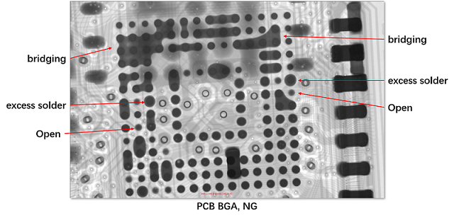
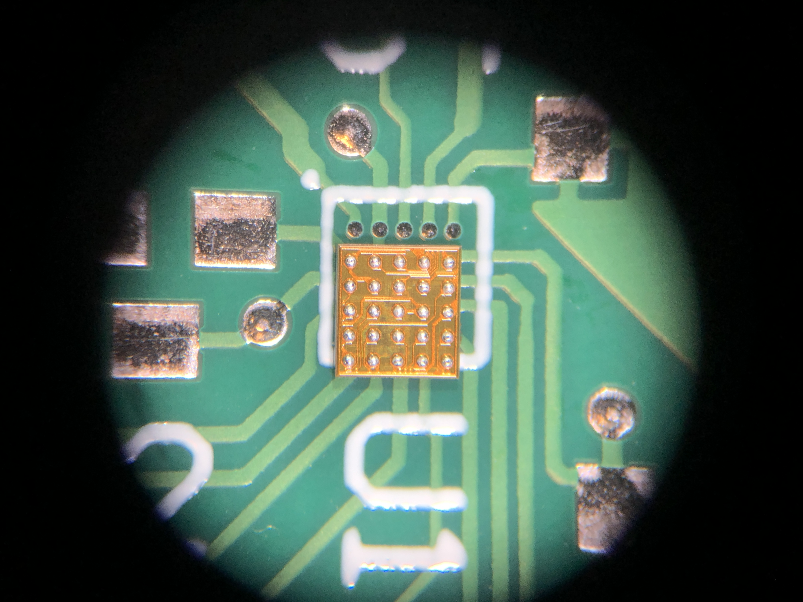
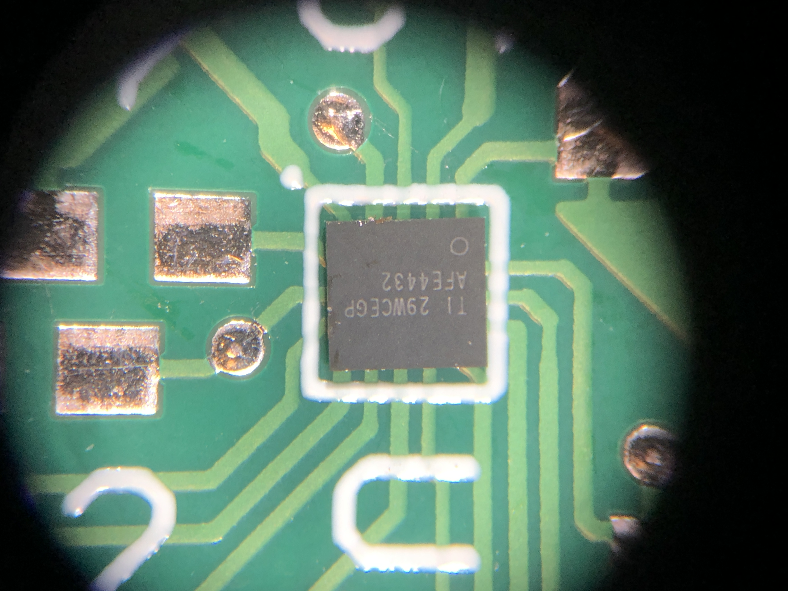

Introduction
Background
A ball grid array (BGA) package is a type of package that leverages a grid array of solder balls on the bottom of your IC package to make a connection to the PCB. The PCB footprint would look like a grid of exposed pads, and the device IC will have solder balls placed along the underside of the device.
When reflowed, the solder balls will melt and collapse into the pad below. Here is a nice no frills YouTube video of reflow happening on the BGA balls.

BGA technology is primarily used for high density devices. We can provide many more interconnection pins compared to packages with pins solely along the perimeter. High density devices are typically ones with very high pin counts, and often this is microcontrollers or processors that have many pins, but the technology can also be used for low-pin count devices that want to have the smallest PCB footprint possible.
Motivations
I was using BGA that had very small packages, both were meant for wearable devices. The BGA I wanted to solder on a custom PCB were two very small, fine-pitch BGA.
- AFE4432, an ultrasmall integrated AFE for wearable optical biosensing
- BQ25120A, a BMS chip with loads of integrated features
The AFE4432 was the smaller of the two, with 25 pins in a 1.75 x 1.75 mm package. This is a pin to pin pitch of 0.35 mm. That's small!
The BQ25120A was larger, 25 pins in a 2.50mm x 2.50mm package. That's a pitch of 0.4mm.

Requirements
Scope of work
This article will discuss the whole process of implementing BGA technology on your PCB designs, from the design to manufacture to assembly.
Some basic knowledge of common ECAD software such as Altium or KiCAD would be nice, as we will be making footprints in the software. I made many iterations of the footprint in software before I was happy with the final product, so some experience with footprint creation would be nice.
Resources
PCB board
It is very important that you realize manufacture of BGA boards IS NOT CHEAP! I got quotes up to the thousands of dollar range for a production run of only 5 boards. This price is mainly drive up through the very fine pitches and small features that are required for the PCB footprints. Like I mentioned earlier, the devices I was designing for had pitches of 0.35mm and 0.40 mm.
The main thing to keep in mind is this is a pretty technical manufacture process, and likely you'll be getting custom quotes from people. I eventually went with PCBWay (tried and true) and paid just short of 500 dollars for a quantity of 5 small 4-layer boards. I will discuss vendor selection and ordering in more detail in [[#Challenges]].
Tools
As far as tools for final assembly, you will need...
- some high-quality flux
- my favorite brand is MG Chemicals. Specifically for this I used some no clean flux paste #8341, but I'm sure many types would work
- hot air soldering station or a reflow oven
I used a pretty worn down Hakko, which is still a nice soldering station but not the top of the line by any means.

A pic of the hot air soldering station I purchased off eBay. Only 115 bucks, a steal compared to the 700 retail they charge.
An alternative and equally viable solution is to use a proper reflow oven. These are x=sometimes tricky to get access too, as really I think there is just one hobbyist level design out there (could be wrong about that).

People also make them out of toasters with some custom heater element controls that can actually follow a reflow curve. My first two boards I used a reflow oven, and actually with the way I designed it I did not have success (more on that later).
I think both hot-air gun soldering and reflow oven are viable solutions. The main thing to keep in mind is that a regular soldering iron WILL NOT WORK. No exposed pads to solder on!
Design
Sketches, Diagrams, or Mockups
Let's first discuss the two major pad types for PCB design. These include SMD (solder-mask defined) and NSMD (non-solder-mask defined). The difference between the two is the relationship between the solder mask clearance and the exposed copper pad.
Design Approach
There are many things that can go wrong with BGA footprints during the assembly process. A number of them are demonstrated in this X-ray inspectino taken after soldering on a board.

The solder balls shorting between one another is a common problem. For large packages, opens become more of an issue as the chip may not lie perfectly flat in the PCB, leaving an open. A solder ball may be missing on the chip as well, possibly knocked off at some point after manufacture. In my semiconductor testing days we put chips through hot-temp qualification, and I had a few chips get balls knocked off coming back from that stress.
We want to design our board in any such way that we can help prevent any of these issues that may occur during soldering.
Implementation / Building
Process
I really had to do a lot of reading to get this project going. I'm very unfamiliar with regular footprint layout, much less fine-pitch BGA layout. To make matters worse, this is a fairly niche topic at the small levels of detail I was dealing with. So not many easily accessible online resources. And the resources I found had conflicting opinions!
Overall the complete process will look like this, from project definition to final assembly
- Pick BGA IC you need to assemble
- Define and create footprint
- this step may be skippable if for some reason your IC has an available footprint online, say from UltraLibrarian or SnapEDA
- Lay out PCB
- Find manufacturer
- Assemble boards (reflow)
Challenges
I would say there are two major hurdles to cross in my design, you may disagree with what is difficult in your particular case
- Finalizing footprint design
- Finding a manufacturer and getting the board made
I think some people may say that the soldering will be difficult, but I had a decent amount of hot-air soldering experience and actually on the board I made found the BGA pins much easier to work with compared to some QFP packages.
footprint creation
This part was mainly difficult for me because of
- lack of online information
- conflicting information / viewpoints on what is best
Really the key piece of information to keep in mind is how you define your solder-mask relief. There are two main types of solder-mask relef, SMD (soldermask defined) and NSMD (non soldermask defined).
To explain the difference in simple terms, SMD pads have the actual copper of the pad go under the soldermask a little bit. NSMD pads don't, with a slight gap between the copper edge and the start of your soldermask.
==add picture of SMD vs. NSMD==
For my application I decided to go with ==HUH?== after much delibration. There seems to be some debate about this topic and what is better. There are probably more clear tradeoffs that I can't clearly explain here.
The consesus I read is that NSMD is the general solution for BGA technology. This is because it allows tighter control of the copper etch process and
I think what steered me is I read one source that seemed very credible that SMD has an advantage for very fine-pitch BGA parts, which mine were.
PCB Manufacture
After I got my design finalized, the next hurdle was finding a suitable vendor for the PCB board manufacture.
vendor requirements The vendor will have to have a few capabilities
The first one is is very tight tolerances on their manufacturing. The spacing between some of these pads will be less than 6 mils, that's a common constraint.
The second one is the ability to do via-in pad technology This involves placing a via directly on top of a pad, as opposed of what normally happens where a PCB designer will route a small trace away from the pad. The reason vias are not normally placed on pads is they cause issues during assembly time. They will wick away all the solder from the joint down into the via.
==add picture of epoxy in VIP==
Via-in pad technology solves this issue by backfilling the drilled via with an epoxy. This epoxy can sometimes be conductive or non-conductive, depending on the coefficient of thermal expansion of your laminate. I won't get into that here.
actually finding a vendor I got some recommendations for a local Dallas (when I was living there) company to use. They had excellent customer service, got on a design call with me to understand my requirements, and were very responsive.
There was only a couple issues with them, the main one being I only wanted 5 boards (their minimum quantity). No board shop with that level of design support and customer support really wants to support a production run of only 5 boards.
The eventual quote I got from them (and several other U.S. board shops was over a thousand dollars). Really at that level it's a quote telling you that we aren't interested in making 5 boards for you. No bueno for a personal project, no matter how motivated I was on it.
I eventually went back to my roots with PCBWay (not a sponsor haha!). I ordered from them in college, but didn't think their manufacturing capabilities were up to snuff with what I was looking for. However, I checked their "Advanced Capabilties" section and thought that their copper to copper clearances might be able to work with me.
The engineers had some questions and we want back and forth for a little bit. Their main questions were actually about the solder-mask, but I conveyed that the way I had it was intentional. They expressed concerns about problems in manufacture but I was willing to take the risk. Eventually we agreed and I got it manufactured!

Wins
The actual soldering part of these chips went way better than anything I could have hoped for. I did hand-assembly of 5 boards over the course of many months, and the BGA chips were by far the chips I had the least problems with. Various QFN packages had many more botched solder jobs with either shorts or discontinuity.
My main advice for this includes
- a liberal usage of flux
- this keeps the chip from flying away when you blow the hot air, as many of these are tiny
- keeping your air pressure low helps with this too
- soldering until you see the package "snap" into place plus 10 seconds
But yeah overall whenever I had to replace one of the BGA packages I was much more enthusiastic to perform the rework compared to pretty much every other IC in the design.
Conclusion
Status and Results
400 dollars later for a small 45 mm x 45 mm PCB, and we had the prototypes in hand.

top of the AFE4432, ignore the incorrect A1 position location :)
Reflection
In hindsight for a hobbyist level project I don't know of these packages are worth the extra design complexity and cost. If I didn't have these packages on my board, for such a small board I could have made 5 for about 20 bucks. This would have made uprevving my design to fix first round mistakes so much easier. Instead, I was stuck with my initial design for many months as I paid so much for the samples.
For v2 of the project in question I designed these for (sorry, top secret for now!) I actually switched over to simpler footprints. This makes parts cheaper, layout easier, and only costs me a slight increase in part footprints on my board. However, the parts I was left to choose from aren't next-gen and don't have all the features. In particular, I missed the BQ25120A for power management, that thing had voltage monitoring, configurable charge protection, AND handled providing system power from your battery pack. A job that in my new design takes a few different ICs, all larger than the BQ25120A.
Anyway, the ability to uprev a PCB design is worth it so I'm not planning on any fine-pitch BGA designs for now.
Looking forward
As PCB manufacturing technology improves, I can see the cost for producing these coming way down. I'm sure the same principles of any industry cost relationship will apply, and as they become more popular as a package type economies of scale will bring the cost down.
Even though I will steer away from using them when I can, I realize I will encounter them again. And I'll be prepared